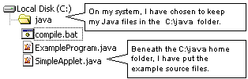
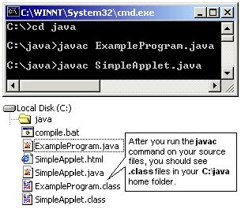
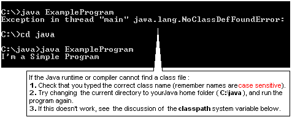
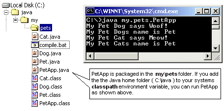
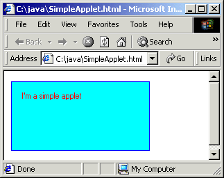
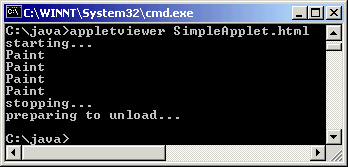
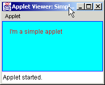
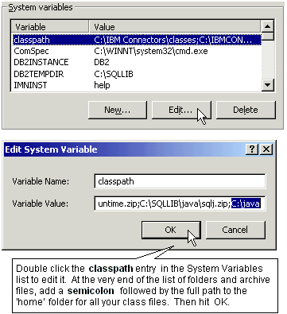
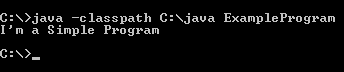

|
3. The third step is to make a home folder where you can keep your
Java source files and test them.
|

The ExampleProgram.java source is a very simple application that
just prints a message to the java.lang.System object. The source
is shown at right.
Click here to download the SimpleApplet.java
source file. An Applet is a different kind of program that is executed
by a web browser, inside a HTML page. It does not have a main( )
method.
|
All applications must have a main( ) method (signature shown below
in red) which the Java runtime looks for:
/**
* A Very Simple Example Java Application.
*/
class ExampleProgram {
/** Entry Point
* @param args an array of command-line arguments
*/
public static void main(String[] args){
System.out.println("I'm a Simple Program");
}
}
The main method is a static method and is the 'entry point' (where
Java starts executing from).
The keyword static means that the method is not associated with
a runtime object, it is part of the class definition and can be
invoked without first having to construct a new instance of the
ExampleProgram class.
|
4. Next we must compile our source files into
class files that the Java runtime can execute.
|

The compile.bat file, is a simple DOS command line script,
that contains 2 lines:
javac ExampleProgram.java
javac SimpleApplet.java
|
To run a java tool, you can open a command line window. In Windows
2000, select Start > Run from the taskbar. In the Run
drop down box, type cmd and hit OK.
Change to your C drive if necessary by entering C: Use the
Change Directory (cd) command to make your Java home folder
C:\java the current working directory. At the >
prompt type javac followed by a space and then the filename
of the java source file you want to compile and hit Enter
and wait.
If the compile succeeds, the command prompt will return, and you
should see a .class file produced.
If the compiler finds an error in your java source file, it will
print error messages. The messages can look scary, so try to pinpoint
something you understand, and fix your java source and recompile.
Errors can sometimes have knock on effects, so fixing one problem
can clear up others.
If you get a NoClassDefFoundError message, see the paragraph
below about the CLASSPATH system variable.
To save time and effort, you can create a .bat file with
your javac line commands. Just double click it to run the commands.
|
5. Finally we can start the Java runtime and execute
our application.
|  |
Open a command line window as described above, and start the java
runtime, by typing java then a space and the fully qualified
class name of your program which is just ExampleProgram.
|
|  |
If your class is in a package, the source and class files should
be in a folder structure within your Java home folder, that corresponds
to the package name.
When running the class, you will need to type the package name
(replacing the file seperators with full stops) followed by the
class name. The example at left shows how to run a PetApp
class, which is in the my.pets package.
|
6. You can use the AppletViewer tool or
a web browser to test an Applet.
|
To test the SimpleApplet.class I've created a very simple web page
called SimpleApplet.html, that contains these HTML tags:
<HTML>
<BODY>
<APPLET CODE=SimpleApplet.class WIDTH=200
HEIGHT=100>
</APPLET>
</BODY>
</HTML>
Double clicking this html file, should start your web browser program,
which will load the page and execute the SimpleApplet.class embedded
in it.

|
Alternatively, I can run my SimpleApplet.html page from the command
line, and see any messages it prints, like this.

The AppletViewer tools opens a window and runs the SimpleApplet
in it.

|
7. The CLASSPATH is one way to tell Java applications
where to look for user written classes.
|  |
The classpath system variable, is similar to the Windows
path. You can change it from the System > Properties >
Environment Variables dialog, as described in step
2 above. If you are going to keep all your classes under one
'home' directory, it is a good idea to add the path to that directory
to the end of the classpath list (as shown at left).
The classpath can also be dynamically set when executing most of
the Java tools from the command line, using the -classpath option.

This is a more flexible approach, but requires more typing. Here
is a link to Suns
web site that describes how to set the classpath from the windows
command line.
|
|